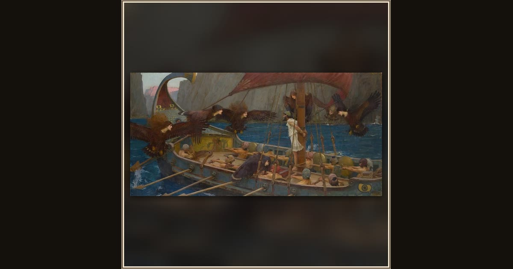

Ulysses and the Sirens
John William Waterhouse · 1891 · National Gallery of Victoria · Melbourne, Australia
Roped to the mast, Ulysses strains to listen as fierce winged Sirens swoop around his ship, trying to lure the rowers onto the rocks. Explore its place in Book XII of the Odyssey.